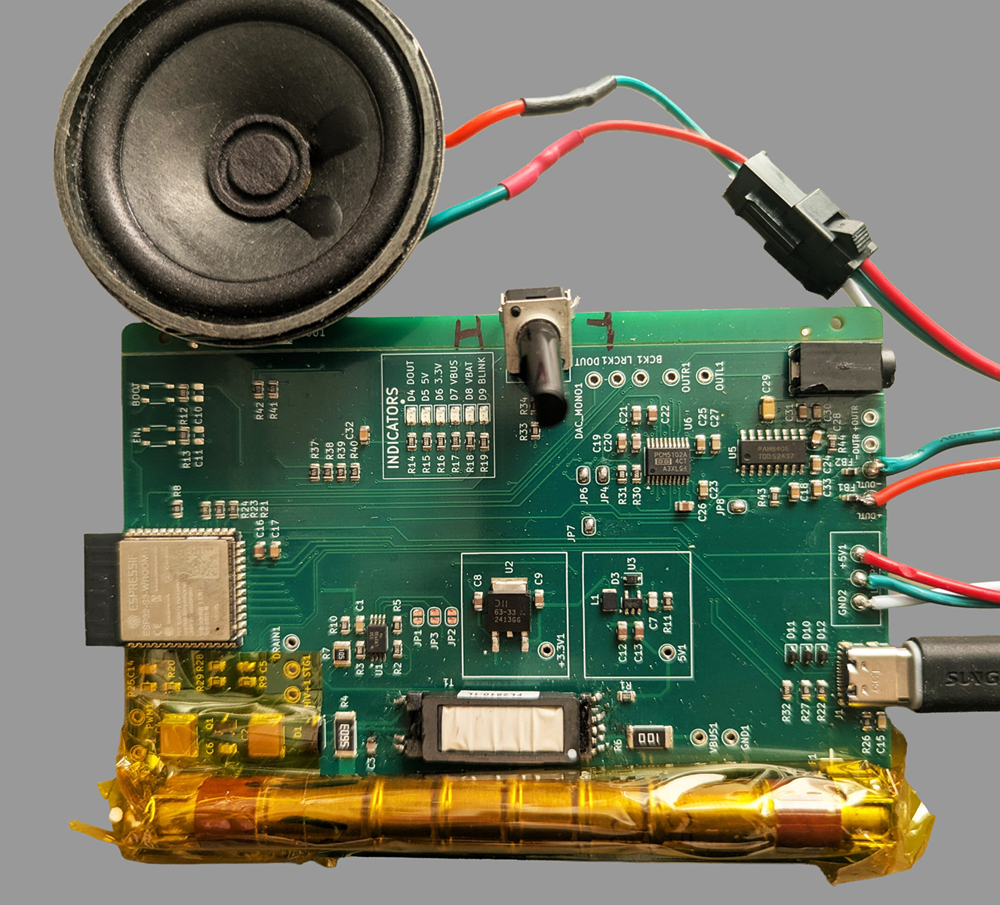

Cosmic rays activate stories
about humanity's near-far future
Messages from Space is an immersive installation where cosmic rays (real, high-energy particles from deep space) activate sculptural instruments, responding to each impact with light, sound, and a science fiction narrative. Participants receive the transmissions over FM radio on vintage walkmans, completing a time travel loop: 1985 hardware tuned to voices from 2126.
Cosmic rays activate stories
about humanity's near-far future
At the center is Liz. She is 126 years old and has chosen the date of her death. Before she goes, she uploads her memories to an archive. Her voice threads through the installation, reflecting on a century-plus of living: the First Pandemic and Fire-Flood Years, the Second Pandemic, the great dispersal — civilization-scale events that reshaped the world she knew. The other voices belong to people in that same near-far future, speaking casually and intimately about small moments of life: a doctor, two centenarians, a young woman, an old man.
What they left in the archive is what you receive as you tune in on the walk. These are the Messages from Space.